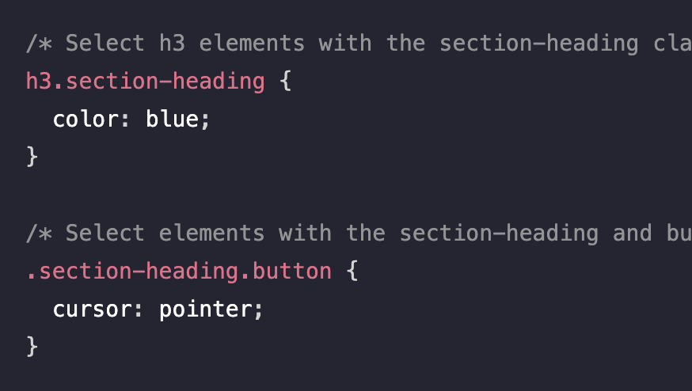

CSS Combo Selecting
Type |
Example |
|---|---|
Grouping Separate SelectorsMatch multiple selectors to the same CSS rule, using a comma-separated list. In this example, the text for both h1 and h2 is set to red. |

|
Chaining SelectorsCSS selectors can be chained so that rule sets apply only to elements that match all criteria. For instance, to select elements that also have the section-heading class, the selector h3.section-heading can be used. |
 |
Descendant SelectorsThe CSS descendant selector combinator is used to match elements that are descended from another matched selector. They are denoted by a single space between each selector and the descended selector. All matching elements are selected regardless of the nesting level in the HTML. |

|